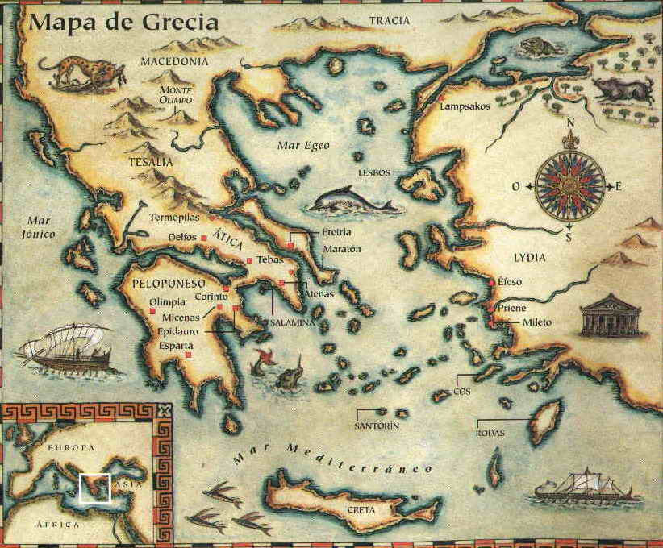
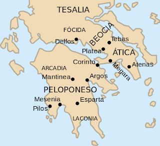

Geografia

1La Grecia antigua o Hélade se desarrolló en la parte sur de la Península de los Balcanes.
2Era un territorio montañoso y arido
3Los valles fueron los lugares escogieron para instalarse.
Los pueblos griegos

Esta era la distribución de los distintos pueblos griegos después de la invasión de los aqueos. Grecia del norte, donde se encontraba la región de Tesalia, fue invadida por los eolios; Grecia central, principalmente Atenas, fue el lugar que escogieron los jonios para establecerse, y, finalmente, el Peloponeso fue invadido casi completamente por los dorios, que procedian de las regiones de Macedonia, Tracia y Epiro
Desarrollo de las ciudades estado
- 1Mercados. intercambio.
- 2Industria artesanal (necesidad de contar, medir, pesar, almacenar, transportar).
- 3Esclavitud, parte del modelo de producción.
- 4Transformación económica, social y cultural.
- 5Regulación social a partir de instituciones. Estado regulador. Auge comercial-militar
Expansión Griega
Se debio a:
- aEl aumento de la población.
- bLa escasez de tierra.
Los griegos empezaron a enviar grupos colonizadores a:
- aAterritorios de todo el Mediterráneo.
- bLas costas del Asia Menor.
Fundaron ciudades, difundieron su cultura.